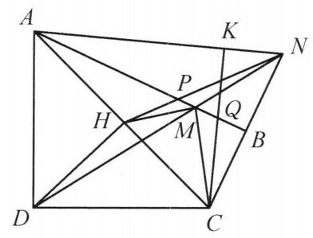

15 例 6：凸四边形双子相似与共圆导角
15.1 题目
在凸四边形 {ABCD} 中, {AB} > {AD},\angle {ABC} = \angle {CDA} = {90}^{ \circ } . 在 {AB} 上取点 M 使得 {AM} = {AD},{DM} 与 {CB} 的延长线交于点 N . 点 D 在 {AC} 上的投影为 H , C 在 {AN} 上的投影为点 K . 证明: \angle {MHN} = \angle {MCK} .

图 2-6
15.2 参考解答
如图 2-6,设 {HN},{CK} 与 {AB} 分别交于点 P, Q . 因为 {AD} = {AM} ,所以,
\angle {ADM} = \angle {AMD} = \angle {BMN}.
\text{ 又 }\angle {ADM} + \angle {CDN} = \angle {BMN} + \angle {CND} = {90}^{ \circ }\text{ , }
故 \angle {CDN} = \angle {CND} ，即 {CD} = {CN} . 在直角 \triangle {ADC} 中， 由 {DH}\perp {AC} ，知 C{D}^2 = {CH} \cdot {CA} ，结合 {CD} = {CN} ，得 \frac{CH}{CN} = \frac{CN}{CA} ，于是 \triangle {CHN} \backsim \; \triangle {CNA} ，故 \angle {CNH} = \angle {CAN} .
由 {CK}\perp {AK},{AB}\perp {BN} ，知 \angle {KCA} = \angle {BPN} .
由 A{D}^2 = {AH} \cdot {AC} 及 {AD} = {AM} ，知 \frac{AM}{AH} = \frac{AC}{AM} ，结合 \angle {HAM} = \angle {CAM} ，知 \triangle {AHM} \backsim \triangle {AMC} ，故 \angle {AMH} = \angle {ACM} ，因此由
\angle {BPN} = \angle {AMH} + \angle {MHP} = \angle {KCA} = \angle {ACM} + \angle {MCK}
知 \angle {MHN} = \angle {MCK} . 所以原问题得证.
注:射影定理结合线段相等可导出三角形相似，这一方法在本题中多次用到.
15.3 解题思路与分析
这份解答之所以让人觉得“费解”，是因为它采用了典型的“综合法”（由因导果）书写顺序：一上来先设出交点 P, Q，然后抛出两个相似三角形，最后突然用外角定理一步收尾。这种写法抹去了探索的痕迹。
如果用“结构拆解 + 逆向分析（执果索因）”的视角还原整个思考过程，你会发现每一步都是高度自然的。
15.3.1 一、 顺推条件：捕捉“双子相似”结构
在阅读题干时，有经验的解题者会第一时间对“直角三角形斜边上的高”产生条件反射：
射影定理的触发 已知 \angle CDA = 90^\circ 且 DH \perp AC，在 \text{Rt}\triangle ADC 中立刻得到两组射影定理关系： AD^2 = AH \cdot AC, \quad CD^2 = CH \cdot CA
条件 AM = AD 的真实意图 题目在 AB 上截取 AM = AD，直接代入第一个射影定理，就得到了： AM^2 = AH \cdot AC \implies \frac{AM}{AH} = \frac{AC}{AM} 配合公共角 \angle HAM = \angle CAM，立刻锁定第一组相似（子母相似/反演相似）： \triangle AHM \sim \triangle AMC \implies \angle AMH = \angle ACM
点 N 的几何本质：被伪装的 CN = CD 既然 A 侧通过 AM = AD 构造了子母相似，那么 C 侧的 CD^2 = CH \cdot CA 怎么用？自然会去寻找与 CD 相等的线段。 观察 \angle ADC = 90^\circ 和 \angle MBC = 90^\circ，由于 \triangle ADM 是等腰三角形（AD = AM），它的两个底角相等，因此它们在两个直角中的余角也必然相等： \angle CDN = 90^\circ - \angle ADM = 90^\circ - \angle BMN = \angle CND 于是得出 CN = CD。你会发现，题目用“DM 与 CB 延长线交于 N”这一操作，本质上只是为了隐蔽地给出 CN = CD。 一旦识破 CN = CD，代入 CD^2 = CH \cdot CA 就会得到完全对称的第二组子母相似： CN^2 = CH \cdot CA \implies \triangle CHN \sim \triangle CNA \implies \angle CNH = \angle CAN
15.3.2 二、 逆向倒推：交点 P 与最后一步外角是怎么想到的？
拿到上述两组相似后，手里最核心的已知角是 \angle AMH = \angle ACM，而目标是证明 \angle MHN = \angle MCK。怎么把它们联系起来？
- 观察射线位置，用“拼角”消去公共边
- 看右侧：已知角 \angle ACM（夹在 AC, CM 之间）和目标角 \angle MCK（夹在 CM, CK 之间）恰好共用一条边 CM！把它们加起来，中间的边 CM 就被消掉了，合成为一个干脆的大角 \angle KCA： \angle MCK = \angle KCA - \angle ACM
- 看左侧：既然 \angle ACM 和 \angle AMH 相等，为了把 \angle AMH（夹在 AB, HM 之间）和另一个目标角 \angle MHN（夹在 HM, HN 之间）用同样的方式捆绑起来，我们也应该把这两个共用边 HM 的角加起来！
交点 P 的自然诞生 把“直线 AB 与 HM 的夹角（\angle AMH）”和“HM 与直线 HN 的夹角（\angle MHN）”加起来，得到的是什么？ 正是直线 AB 与直线 HN 的夹角！ 为了在图上表示出直线 AB 与直线 HN 的夹角，我们才顺理成章地设 HN 与 AB 交于点 P。在 \triangle PMH 中利用外角定理，就有： \angle MHN = \angle BPN - \angle AMH 所以，点 P 绝不是凭空猜出来的辅助点，而是为了表示“AB 与 HN 的夹角”自动产生的交点。
在直角三角形中完成合龙 既然 \angle AMH = \angle ACM，要证 \angle MHN = \angle MCK，现在只需要证明刚才合成的两个大角相等： \angle BPN = \angle KCA 这两个角各自处在一个现成的直角三角形中：
- 在 \text{Rt}\triangle PBN 中（因为 AB \perp BN），\angle BPN = 90^\circ - \angle CNH；
- 在 \text{Rt}\triangle AKC 中（因为 CK \perp AN），\angle KCA = 90^\circ - \angle CAN。
因此，要证 \angle BPN = \angle KCA，只需证它们的余角相等，即 \angle CNH = \angle CAN——而这恰好就是我们在第一阶段由 \triangle CHN \sim \triangle CNA 得出的结论！至此，双向推理完美合龙。
15.3.3 三、 原解答中的两处“跳步与冗余”说明
读懂了上面的思路，你还能顺便看穿原书解答在排版和改写时留下的两个小瑕疵：
- 被遗忘的点 Q：解答第一句写道“设 HN, CK 与 AB 分别交于点 P, Q”，但后文直到证毕都再也没有出现过字母 Q。这是因为在 \triangle ACN 中，AB \perp CN 且 CK \perp AN，点 Q 其实是 \triangle ACN 的垂心。作者最初在草稿上很可能是利用对顶角与直角三角形相似先写出 \angle KCA = \angle BQC，再去和 \angle BPN 比较；定稿时简化了表述，却忘了删掉开头的点 Q。
- 因果关系的省略：原解答写“于是 \triangle CHN \sim \triangle CNA，故 \angle CNH = \angle CAN。由 CK \perp AK, AB \perp BN，知 \angle KCA = \angle BPN”。这两句之间其实省略了“等角的余角相等”这一关联词，容易让读者误以为第二句是独立推出来的。
15.3.4 四、 更高维度的视角：这道题是怎么命制出来的？
如果从反演几何（或正交圆）的视角看，这道题的构造背景非常清晰：
- 以 A 为圆心、AD 为半径作圆 \omega_A（过点 D, M）；以 C 为圆心、CD 为半径作圆 \omega_C（过点 D, N）。
- 因为 \angle ADC = 90^\circ，所以 \omega_A 与 \omega_C 是正交圆（CD 切 \omega_A 于 D，AD 切 \omega_C 于 D），DH \perp AC 所在的直线就是两圆的根轴。
- 在关于 \omega_A 的反演变换下，点 H 与点 C 互为反演点；因为 M \in \omega_A，直接由反演性质得 \triangle AHM \sim \triangle AMC。
- 在关于 \omega_C 的反演变换下，点 H 与点 A 互为反演点；因为 N \in \omega_C，直接由反演性质得 \triangle CHN \sim \triangle CNA。
命题人正是以这两个正交圆对点 H 的双重反演对称性为内核，擦去圆弧，再用直角与垂线包装出了这道平面几何题。
15.4 分步证明
15.4.1 步骤 0：题设条件与几何构型
在凸四边形 ABCD 中，\angle ABC = \angle CDA = 90^\circ，对角线 AC 为外接圆直径。已知 AB > AD。 在边 AB 上截取点 M 使得 AM = AD。 连接 DM 并延长，与 CB 沿 B 方向的延长线交于点 N。 作 DH \perp AC 于 H，CK \perp AN 于 K。设 HN 与 AB 交于 P，CK 与 AB 交于 Q。 求证目标：\angle MHN = \angle MCK
15.4.2 步骤 1：① 等腰 △ADM 与直角互余 ⇒ CD = CN
由 AD = AM，可知 \triangle ADM 为等腰三角形，故： \angle ADM = \angle AMD = \angle BMN （对顶角相等） 由 \angle CDA = 90^\circ，知 \angle ADM + \angle CDN = 90^\circ； 又在 \text{Rt}\triangle MBN 中，\angle MBN = 90^\circ，知： \angle BMN + \angle CND = 90^\circ 由等角之余角相等，立得： \angle CDN = \angle CND \implies CD = CN 即 \triangle CDN 也是以 C 为顶点的等腰三角形。
15.4.3 步骤 2：② 射影定理与比例变换 ⇒ △CHN ∽ △CNA
在 \text{Rt}\triangle ADC 中，DH \perp AC，由直角三角形射影定理可知： CD^2 = CH \cdot CA 结合上一步证得的 CD = CN，代换得： CN^2 = CH \cdot CA \iff \frac{CH}{CN} = \frac{CN}{CA} 注意到 \triangle CHN 与 \triangle CNA 拥有公共顶角： \angle NCH = \angle ACN 两组对应边成比例且夹角相等（SAS 相似），故： \triangle CHN \sim \triangle CNA \implies \angle CNH = \angle CAN
15.4.4 步骤 3：③ 直角互余角转换 ⇒ ∠KCA = ∠BPN
因为 CK \perp AN（\angle AKC = 90^\circ），在 \text{Rt}\triangle AKC 中： \angle KCA = 90^\circ - \angle KAC = 90^\circ - \angle CAN 另一方面，在 \text{Rt}\triangle PBN 中，AB \perp CB（\angle PBN = 90^\circ）： \angle BPN = 90^\circ - \angle BNP = 90^\circ - \angle CNH 代入 Step 2 中已证的 \angle CNH = \angle CAN，由两锐角余角相等： \angle KCA = \angle BPN 这一组角相等为后续的外角分解提供了关键桥梁。
15.4.5 步骤 4：④ 射影定理与公共角 ⇒ △AHM ∽ △AMC
再次在 \text{Rt}\triangle ADC 中应用射影定理，以直角边 AD 为基准： AD^2 = AH \cdot AC 结合已知条件 AD = AM，代换得： AM^2 = AH \cdot AC \iff \frac{AM}{AH} = \frac{AC}{AM} 注意到 \triangle AHM 与 \triangle AMC 拥有公共角： \angle HAM = \angle CAM 两边对应成比例且夹角相等（SAS 相似），因此： \triangle AHM \sim \triangle AMC \implies \angle AMH = \angle ACM
15.4.6 步骤 5：⑤ 外角代换消元 ⇒ 最终得出 ∠MHN = ∠MCK
在 \triangle PMH 中，A, P, M, B 共线，\angle BPN 为顶点 P 处的外角： \angle BPN = \angle AMH + \angle MHP = \angle AMH + \angle MHN 又由 Step 3 知 \angle BPN = \angle KCA，而射线 CM 将 \angle KCA 拆分为： \angle KCA = \angle ACM + \angle MCK 联立上述两式得到： \angle AMH + \angle MHN = \angle ACM + \angle MCK 代入 Step 4 中已证的 \angle AMH = \angle ACM，消去两边等量，严谨推得： \angle MHN = \angle MCK 原命题严密得证！